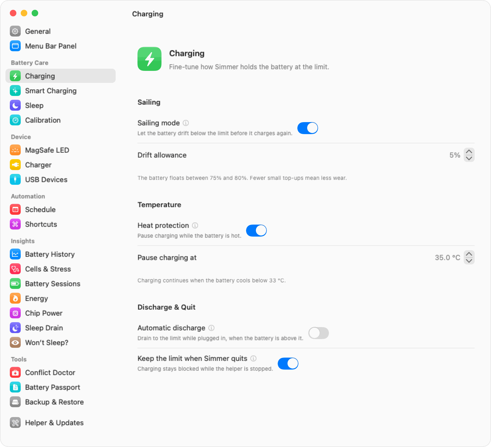
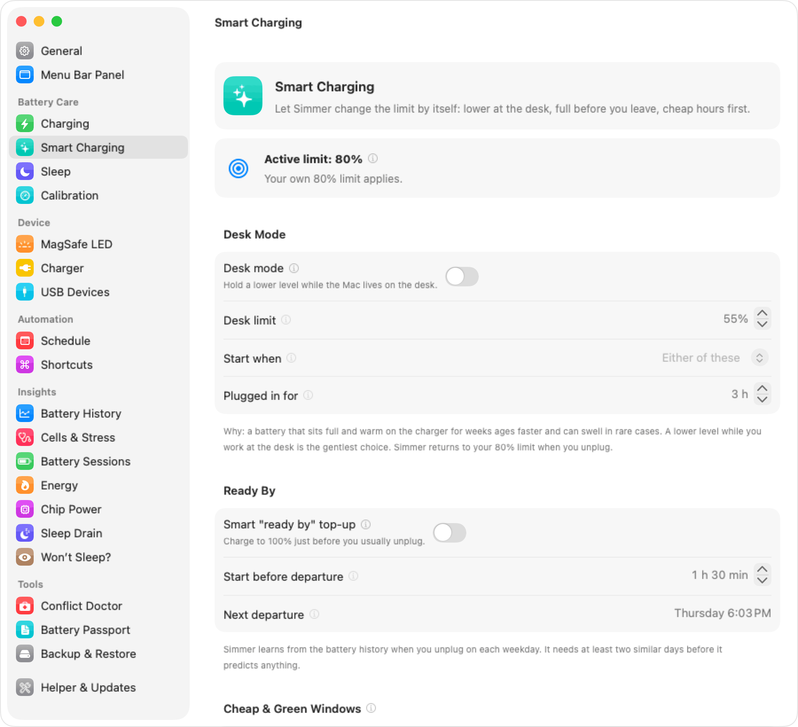
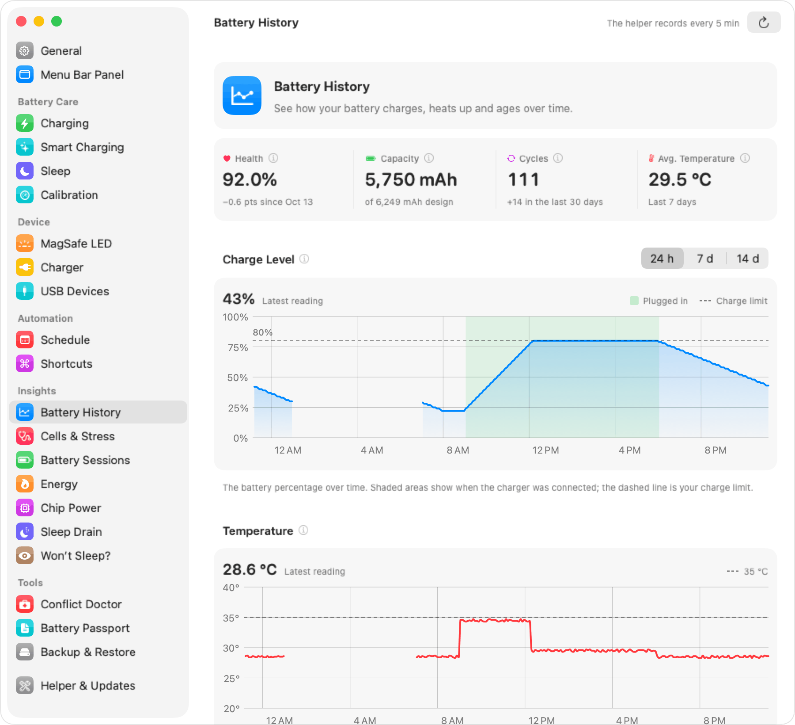
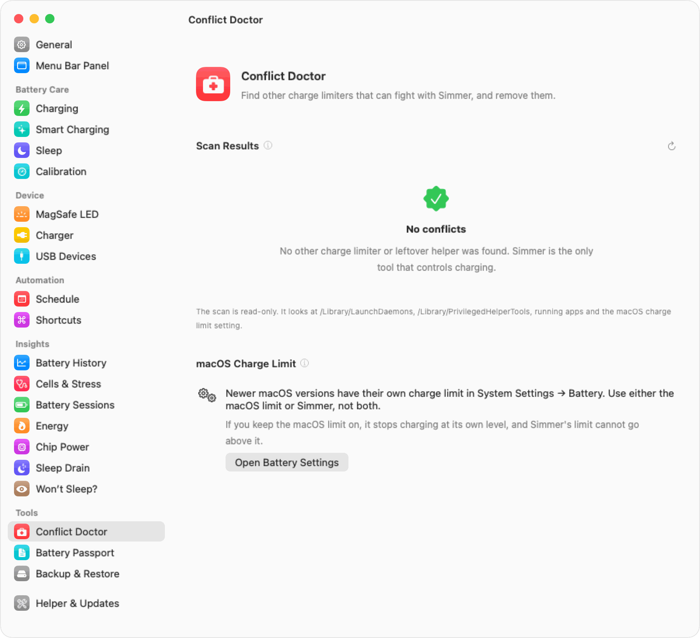
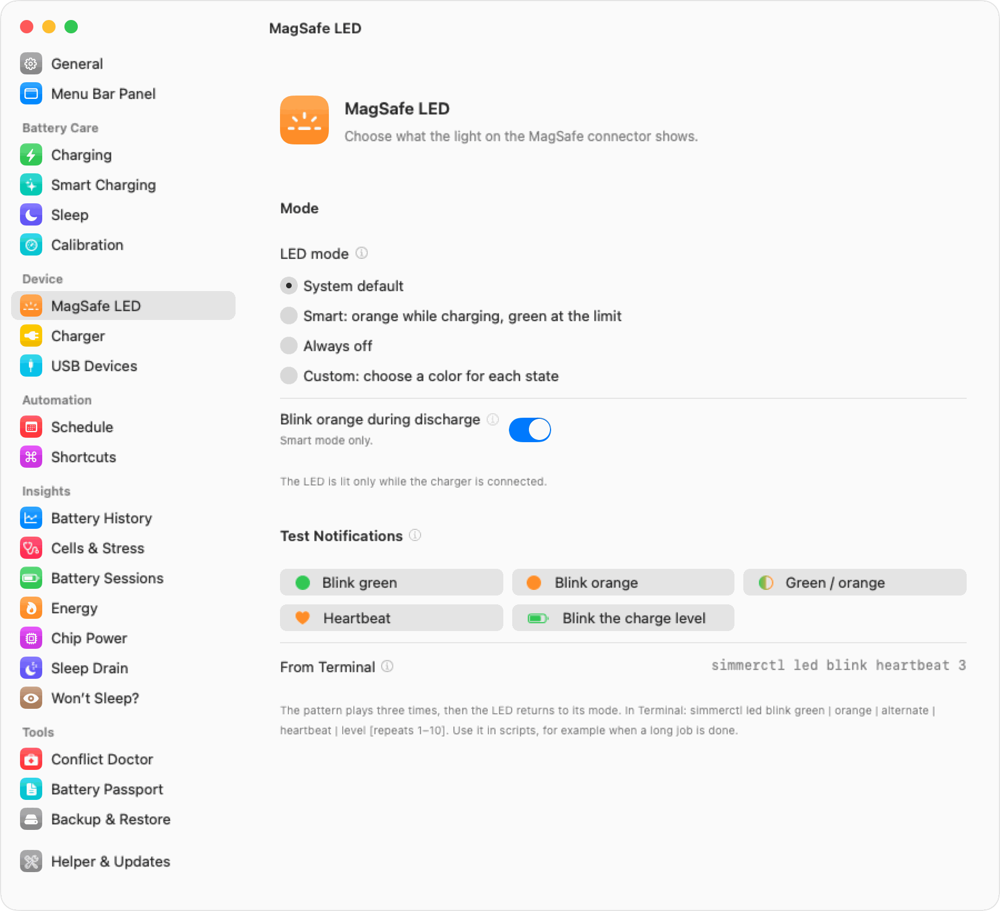
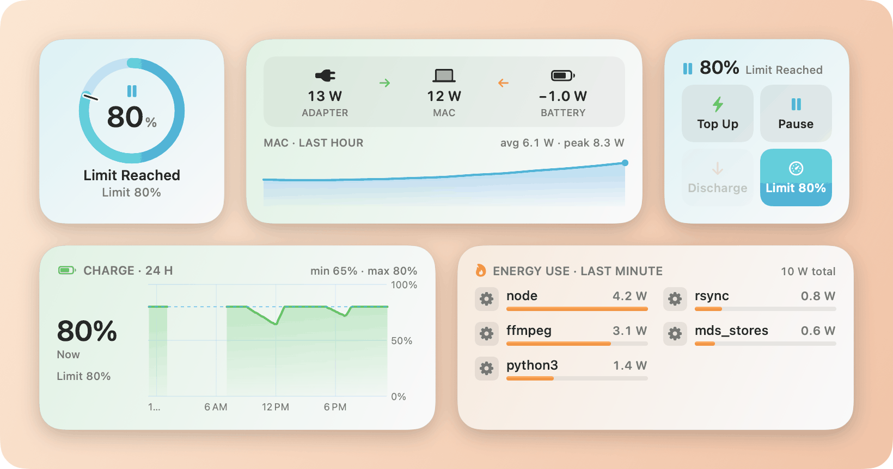

Simmer: macOS battery manager
Make your Mac's battery last longer.
Simmer is a free, open-source menu bar app for macOS. It holds your MacBook's charge anywhere from 20% to 100%, and it shows you what the battery is really doing.
Free under GPL-3.0. Needs macOS 14 or later. Apple silicon, and Intel in beta.
80%
A gentle simmer
The sweet spot for a Mac that stays plugged in: plenty of charge, far less wear.
Turn the knob, or drag the plug to the jar. The macOS setting stops at 80%. Simmer goes down to 20%, the gold part of the scale.
Batteries age fastest when they sit full and warm.
A MacBook that lives on its charger spends most of its life at 100%, often warm from work. That is the worst place for the cells. Holding the charge lower, for example at 60–80%, slows the wear a lot. You give up some range on days you do not need it, and you keep more capacity for the years you do.
Ten years in ten seconds
Two identical Macs on a warm desk. One always sits at 100%. The other is held at 80% with Simmer. Press play, or drag through the years.
Both start at 100% health.
Illustrative model, not a measurement: about 20% of the capacity lost after 5 years at a constant 100%, about 9% when held at 80%, with the same warm room for both. Real aging depends on heat, cycles and the battery itself.
Six parts, one small app
-

Settings → Charging -

Settings → Smart Charging -

Settings → Battery History -

Settings → Conflict Doctor -

Settings → LED -

Desktop widgets
Every feature, at a glance
Point at a feature, or open Details, for one line on each.
Charging
- Limit from 20%Write any limit from 20% to 100% to the power controller.
- SailingLet the charge drift a few percent before it charges again.
- Heat protectionCharging pauses while the battery is hot.
- Discharge on chargerRun on battery down to the limit, still plugged in.
- Auto dischargeAbove the limit, Simmer brings the charge down.
- Top up to 100%One click charges to full once, then back to the limit.
- Calibration cycleA guided full cycle that recalibrates the gauge.
- Limit survives quitCharging stays blocked when the app is closed.
- No charging asleepCharging stops before the Mac sleeps.
- Awake until limitThe Mac stays awake until it reaches the limit.
Smart charging
- Desk modeA lower limit on long, lid-closed desk days.
- Ready-by top-upLearns when you unplug and fills to 100% just before.
- Cheap & green hoursCharges in the hours you choose, with a floor.
Insights
- Live power flowAdapter to Mac to battery, in watts.
- Battery historyCharge, heat, power, health and cycles, up to 30 days.
- Top energy appsThe apps that use the most power, in watts.
- Sleep drain detectiveWhat woke the Mac overnight, and what it cost.
- Why it won't sleepThe processes keeping the Mac awake right now.
- Battery sessionsEach stretch on battery: length, drain, average power.
- Chip powerCPU, GPU, Neural Engine and memory power.
- USB device powerWhat each connected device draws.
- Cells & stressCell balance and a battery stress meter.
- Raw vs macOS %The hardware gauge next to the smoothed number.
- Health & cyclesCapacity against the design, and the cycle count.
Tools
- Charger reportIs your charger or cable strong enough?
- Conflict doctorFinds and removes leftovers of other limiters.
- Battery passportA PDF health record, handy when you sell.
- Settings backupSave every setting and load it on another Mac.
- Scheduled actionsTimed top-ups, limits and calibrations, with catch-up.
Device
- Smart LED modesOrange while charging, green at the limit, or off.
- Colour per statePick the light for each charging state.
- LED notificationsBlink patterns for the limit, heat or your scripts.
- Auto power modesLow and High Power Mode, on battery or charger.
Everywhere
- 6 desktop widgetsConfigurable, with working buttons.
- 22 Shortcuts actionsSet the limit, top up, blink, read the health.
- simmer:// linksControl Simmer from a browser or a script.
- simmerctl CLIEvery setting, plus status as JSON.
- Raycast extensionStatus, limit, top up and pause from Raycast.
- Arrangeable panelReorder or hide each part of the menu bar panel.
- NotificationsFor the limit, heat, calibration and more.
- Signed auto-updatesSparkle updates with EdDSA signatures.
- Apple silicon & IntelFull support on Apple silicon. Intel in beta.
- No telemetryNo account. The only request is the update check.
Try it here
Where the watts go in each state. Pick one.
The charger powers the Mac and the battery rests at the limit.
Smart mode, at the limit: green.
$ simmerctl limit 80
Charge limit set to 80%
$ simmerctl set sailing on
sailing = on
$ simmerctl status
Battery: 80% (hardware 79.4%)
State: Charge Limit Reached
Limit: 80%
Temp: 31.0 °C
Power: adapter 19.1 W, system 18.6 W, battery 0.0 W (idle)
Health: 92.0% (5750 / 6249 mAh)
Cycles: 111
$ open "simmer://topup"
$ simmerctl led blink heartbeat 3Install Simmer
Homebrew
The cask lives in the Simmer repository, so no separate tap repository is needed.
brew tap umarwaseeem/simmer https://github.com/umarwaseeem/simmer && brew install --cask simmerFirst launch
-
Open it once with right-click
Simmer is free and not signed with a paid Apple Developer ID, so macOS blocks a normal double-click the first time. Right-click Simmer in Applications, choose Open, then Open again. On macOS 15 and later, you may need System Settings → Privacy & Security → Open Anyway.
-
Install the helper
Simmer asks for your administrator password once. Only root can change charging, so a small helper runs as root and does only that. The app itself never runs as root.
-
Pick a limit
Click the menu bar icon and set the limit. 80% is a good start for a Mac that is mostly plugged in.
Requirements: macOS 14 Sonoma or later. Apple silicon is fully supported. Intel Macs are in beta.
Questions
Which limit should I use?
For a Mac that is plugged in most of the day, 60–80%. Use Top Up before a day away from a socket.
Is a limit really good for the battery?
Yes. Cells wear faster when they sit full and warm. A limit does not stop aging, it slows it.
Is it safe?
Simmer uses the same charging switches that macOS uses. It does not change voltages or currents. Uninstall the helper and normal charging comes back.
Does it work when the app is closed?
Yes. A small helper holds the limit by itself. Remove other charge limiters first, so the two do not fight.
Does Simmer collect any data?
No. No telemetry, no account. The only network request is the update check, and you can turn it off. This site has no analytics and no cookies.
More answers in the full FAQ.
Open source, every line
Simmer is free software under the GNU General Public License v3.0. You can use, study, share and change it. Bug reports, Intel test reports, translations and pull requests are very welcome.